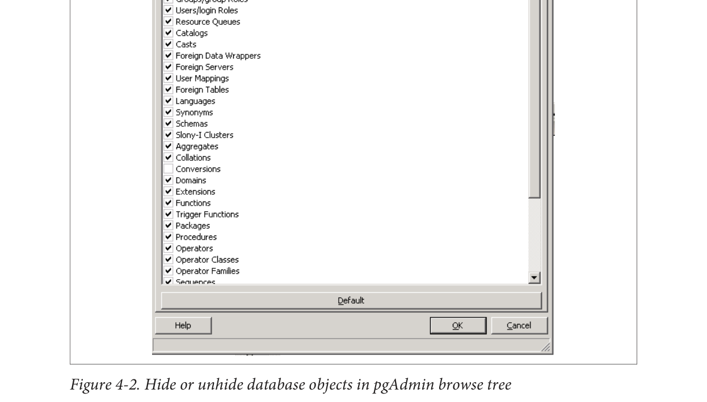

If you select Show System Objects in the tree view check box, you’ll see the guts of your
server: internal functions, system tables, hidden columns in tables, and so forth. You
will also see the metadata stored in the PostgreSQL system catalogs: information_schema
catalog and the pg_catalog. information_schema is an ANSI SQL standard catalog
found in other databases such as MySQL and SQL Server. You may recognize some of
the tables and columns from working with other database products.
pgAdmin does not always keep the tree in sync with the current state of the database. For example, if one person alters a table, the tree viewed by a second person will not automatically refresh. There is a setting in recent versions that forces an automatic refresh if you select it, but you’ll have to contend with a slight wait time as pgAdmin repaints.
60|Chapter 4: Using pgAdmin